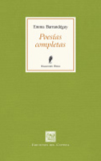
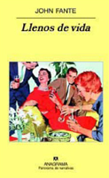
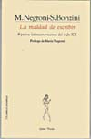
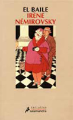

Franz Kafka
Escritos

por Juan Fernando García
Cada tanto, entre tanta novedad libresca y el fárrago de editoriales de variado tamaño que pueblan el estante de la poesía argentina contemporánea, aparece una perla: Emma Barrandéguy, poeta provinciana –tal la feliz denominación de Laura Estrin–, a quien la lejanía del Centro había vuelto invisible. Emma Barrandéguy, que ha escrito con el pulso de sus aguas, de su paisaje, de sus tiempos, tiene hoy su obra poética completa, a tres años de su muerte, y este rescate, asumido en el riesgo editorial, lo vuelve un feliz acontecimiento.
En diciembre de 2002, María Moreno presentó en el Rojas a una escritora entrerriana casi desconocida, que presentaba una novela autobiográfica escrita en los años 50. Nacida en 1914, llegó de Gualeguay a Buenos Aires, trabajó en el mítico diario Crítica de Botana y fue secretaria de su esposa, Salvadora Medina Onrubia (que bien merece otro capítulo), la abuelita del genial Copi. Días de turbulencia erótica se cuentan en "Habitaciones". Algo de su vida particular se cuela en esa prosa. Y para algunos más informados, un lazo cercano con un coterráneo insoslayable: Juanele Ortiz. De esa unión da cuenta un bello poema fechado en 1947, “El río”: “Y así le doy la mano a Juan Ortiz, poeta,/ río con tantas voces distintas para amarte.”
La reunión de su obra poética (impecable trabajo de Irene Weiss), merece una celebración: por estas páginas de períodos tan diversos (años 30, 1964, 1986, 1991, más muchos inéditos de esas fechas), Emma Barrandéguy se ubica en medio de un canon eminentemente masculino y transita –en época y en lírica– el mismo camino de la poesía social que brilla en los versos de Tuñon y otros que van a dar simiente a una línea indeleble de nuestra literatura histórica. Pero eso lo reponemos ahora, cuando acomodamos la biblioteca y aparece con esa estatura. Roja flor de versos de tiempos difíciles, entreguerras, camaradas y proletariado. “Vladimiro Ilitch, el de las claras palabras/ y la potente voluntad”. Porque la puerta de ingreso son esos poemas políticos que volverán en los inéditos y en medio, el camino de una mujer que va –central y periférica– a hilvanar una voz particular. Porque si bien aquellos poemas de los años 30 se tornan nostálgicos, marcan un comienzo, una novela de aprendizaje, que en la segunda etapa –entre los 60 y los 80 al presente– encuentra una madurez que la vuelve prístina, firme en sus elecciones rítmicas, resuelta. Una reverberancia en clave amorosa, poemas pulsados con tecla de raíz erótica, con cierto pudor y cierto desparpajo, alejada de cualquier vitalismo y cerca sí, de la elegía vital.
Es un descubrimiento, sí. Es pura celebración de la Poesía.
Ediciones del Copista | Colección Fénix |
2009 |
440 pág.

Llenos de vida | John Fantepor J. Martínez
Un escritor de guiones de Hollywood vive con su mujer, embarazada por primera vez. El piso de la cocina cede ante la furia de las termitas. Es entonces cuando John Fante, el personaje creado por John Fante, decide recurrir a su padre, albañil de profesión. Para convencer al viejo Nick Fante, viaja a su pueblo natal, en el que viven sus padres desde el comienzo de lo tiempos. Calcula las palabras con las que encarará el pedido, calcula cómo presentarse a su madre, quien tiene la costumbre de desmayarse en cada visita de sus hijos. En ese viaje, en estos trazos, el escritor John Fante construye una novela cuya apariencia es mucho más llana que sus profundidades. Con un humor ácido y sin concesiones, con una pluma ágil y una lengua directa, sin por eso dejar de ser poética, nos empuja a querer seguir sabiendo qué será de ese John Fante personaje y su devenir familiar.
Llenos de vida está decorada con un puñado de personajes de reparto que el escritor John Fante tan bien conoce y maneja: la madre del JF personaje; el guarda del tren y el cura que trata de convertirlo al catolicismo, siguiendo los pasos de su esposa Joyce, son una suerte de santísima trinidad con la cual se pone en juego (y en tela de juicio) los valores morales de la sociedad norteamericana, el valor de los libros pedagógicos sobre el embarazo, el catolicismo... La caída del piso es una advertencia, una pincelada, una metáfora sobre los endebles cimientos de la sociedad norteamericana, en pleno auge del american way of life. Como frutilla del postre, el escritor juega con la metaficción al ponerle su nombre al personaje de la novela y abre, de ese modo, el durazno de la curiosidad que suele rodear las obras literarias, para quienes buscan en sus contenidos los trazos biográficos de su autor. Llenos de vida no es una novela costumbrista, es un retrato crudo y realista de los años que narra.
Anagrama | 2008
Discriminando
por Andrea Barone
En esta época y desde diversos lugares se reitera, casi como un mandato que indica la posición correcta, debida: no hay que discriminar.
Como si fuese uno de los pecados más graves de una nueva versión, no menos religiosa, de la igualdad, del hermanamiento, se nos demanda que no discriminemos. Pero, básicamente, discriminar es elegir, escoger, hacer una diferencia (sin juicios de valor ni morales de por medio, sin injurias ni ofensas), lo que implica que en esa elección, incluso sin saberlo, estamos comprometidos, implicados, parcializando, recortando alguna parte de algún alguien o de algo, para armar un buen menú.
Es necesario que la igualdad de derechos, algo sumamente importante, no nos enceguezca respecto de las asimetrías, de lo fundamentalmente disimétrico, que es una de las condiciones del enriquecimiento. Es preciso no quedar a merced de las relaciones globalizadas del siglo XXI, un cambalache menos artesanal y más tecnológico, que nos pretende iguales, sin diferencias entre uno y otro, entre esto y lo otro. Globo, burbuja englobante que nos redondea hermanándonos en la ilusión de un todo posible, accesible, compartible, homologable, intentando borrar las diferencias, entre el erotismo y lo obsceno, por ejemplo, con los consecuentes costos que ello conlleva.
Articulado a una ética es posible hacer un buen uso de lo que no es posible de igualar, de las no coincidencias, de lo imposible de conciliar, y quizás sea ese uno de los mejores modos de discriminar.
5
quiero mi cuerpo cuando está con tucuerpo. Es una cosa totalmente nueva.
Los músculos mejor y los nervios más aún.
me gusta tu cuerpo. me gusta lo que hace,
me gustan sus modos, me gusta sentir la espina dorsal de tu cuerpo y sus huesos y la temblorosa
lisurafirmeza y lo que he de
una vez y otra vez y otra vez
besar, me gusta besar esto y aquello de vos,
me gusta, acariciando despacio la, vibrante pelusa
de tu eléctrica piel, y lo-que-es llega
sobre la carne separada... Y ojos grandes migas de amor,
y posiblemente me gusta el estremecimiento
del debajo de mí tú totalmente nueva
En algún lugar...
en algún lugar por donde nunca anduve, afortunadamente más allá
de toda experiencia, tus ojos tienen su silencio:
en tu gesto más frágil hay cosas que me abarcan,
o que no puedo tocar porque están demasiado cercanas
tu más leve mirada me descerrará fácilmente
aunque me hubiera cerrado como dedos,
me abres siempre pétalo por pétalo como la Primavera abre
(tocando hábilmente, misteriosamente) su primera rosa
o si tu deseo es cerrarme, yo y
mi vida nos cerraremos muy hermosamente, de repente.
como cuando el corazón de esta flor imagina
la nieve cuidadosamente cayendo en todas partes;
nada que hayamos de percibir en este mundo iguala
el poder de tu intensa fragilidad, cuya textura
me somete con el color de sus países,
representando muerte y para siempre con cada respiración
(no sé qué hay de tí que se cierra
y se abre; sólo algo de mí entiende
que la voz de tu ojos es más profunda que todas las rosas)
nadie, ni siquiera la lluvia, tiene manos tan pequeñas

por Claudia Hartfiel
¿Quién no ha sospechado alguna vez que la palabra ‘antología’ esconde algún secreto, de esos que iluminan y ensanchan el mundo? El antologador o antólogo debería conocer ese secreto para llevar a cabo su tarea con fidelidad. Sin embargo, alguien que poseyera un don especial, una fina intuición, podría llegar a ‘antologar’ correctamente, dado que es un verbo inexistente en los diccionarios españoles: debería inventar su razón de ser cada vez .
¿Acaso es siempre ostensible el criterio de quien recoge flores? Como, llegado el caso: “juntaré solo flores azules”, o “vendrán conmigo las más solitarias”. Considerando que de eso se trata realizar una antología (del griego, anthología, formada por ánthos: ‘flor’ y légein: ‘escoger’, ‘recoger’), y a partir de criterios que los lectores descubrirán en carne propia, María Negroni y Silvia Bonzini armaron su ramo: La maldad de escribir. 9 poetas latinoamericanas del siglo XX.
Las 9 elegidas, ¿escriben para enfrentar así el mundo que no las dice o deshilachan y reagrupan palabras para conjurar esa maldad del escribir que no las suelta? El enigma y la invitación a develarlo son planteados desde el título, el prólogo y los ensayos preliminares por las antologistas María Negroni (nacida en 1951 en Rosario, Argentina; ensayista, novelista, traductora y poeta) y Silvia Bonzini (novelista, poeta y psicoanalista, nacida en Buenos Aires).
En esta publicación que vio la luz en febrero de 2003 allá tan lejos, en Montblanc, Tarragona, España, por Ediciones Igitur –a partir de un interés editorial por difundir voces de todas partes del planeta, pero especialmente de mujeres–, las latinoamericanas y poetas Cristina Peri Rossi (Uruguay, 1941), Olga Orozco (Argentina, 1920-2000), Ana Cristina Cesar (Brasil, 1952-1983), Fina García Marruz (Cuba, 1924), Blanca Varela (Perú, 1926), Marosa di Giorgio (Uruguay, 1934-2004), Elsa Cross (México, 1946), Cecilia Meireles (Brasil, 1901-1964) y Amelia Biagioni (Argentina, 1918-2001) dejan que sus flores, sus voces, sus secretos se encuentren con quienes abren estas páginas. Y sin duda habrá efectos, porque estas poetas susurran o hablan o gritan, sin dar lugar al silencio o a la indiferencia: la textura de sus versos hecha voz en la cabeza del lector, por mérito de su arte, logra que se ponga al menos en duda el fracaso de arrancarle al idioma lo inexpresable. Estas mujeres se las arreglan para que entre sus líneas quebradas se escape el mundo, con todo su esplendor y escoria.
Las antologistas han tenido el buen gusto de recoger –tanto en los estilos como en los temas– flores variadas y exquisitas, como si la diversidad poética femenina replicara la de la naturaleza latinoamericana. Como ante estos exuberantes paisajes, es una experiencia fuerte el encuentro con este mundo, desatado por obra, gracia y desgracia de estas poetas: sus flores no escatiman perfume, pero tampoco espinas.
Quien se anime a entrar en estas páginas será tomado por entero en el placer que otorgan estas mujeres, felices de ser acompañadas en sus travesías. Pero ni ellas ni las antologistas advierten que quien regresa de ese viaje ya no podrá volver a ser jamás el que partió. Alabadas sean.
Igitur | 2003

por J. Martínez
Hay números que no escriben una historia pero la inscriben: a 75 años de su primera traducción y a 52 del asesinato de su autora en Auschwitz, se reeditó El baile, un profundo y contundente relato bajo la apariencia de una situación cotidiana típica. La novela es recorrida por la tensión en relación a Lo Familiar de su tiempo: la distancia insalvable entre padres e hijos, la crianza en el encierro y el desapego característicos de los inicios del siglo XX. A medida que el lector se deja llevar por la pluma ágil e incisiva de Némirovsky, esa aparente simpleza cotidiana deja expuestos los mecanismos represivos que constituyen la esencia de La Sociedad. Allí se entrama Lo Familiar, que se urde con hilos que van desde el azar que provoca un giro –en apariencia– beneficioso (una fortuna inesperada, en este caso, producto de un movimiento en la bolsa de valores) hasta las frustraciones y diferencias entre ser espectador (asumir el rol impuesto por el poder familiar) o actuar tomando el control de la propia vida (subvertir el orden establecido). La autora hace uso de la vida de Antoinette Kampf para ir por un camino muy distinto al de los relatos iniciáticos: no hay una penetración del mundo adolescente en el mundo adulto, sino un acto del mundo adolescente que, mediante la venganza y la humillación a sus mayores, reubica a esos adultos que la expulsan, la niegan y la recluyen. En El baile, la venganza está ligada a la curiosidad sexual de la adolescente Antoinette: es consumada en el momento en que su institutriz se pierde en arrumacos con su amante y a la jovencita le es encargado el destino del baile que organizaron sus padres. El enfrentamiento frontal, la ruptura con el destino trágico parece ir a contramano de la vida de Némirovsky, quien escapó de la revolución rusa de 1917 por su condición de aristócrata y fue asesinada por los nazis por su condición de judía. El baile es un texto de lectura rápida y efectiva, como un golpe bien asestado.
Salamandra | 2006
Bonus track
por Juan Fernando García
Si hablamos de poesía reunida, inevitable resulta mencionar el voluminoso tomo Tener lo que se tiene, de Diana Bellessi, que circula desde comienzos de 2009. Todos sus éditos, desde uno primero de 1974 hasta el último, que da título al libro. Tributo del mudo, Eroica, El jardin, Mate cocido, La rebelión del instante, para mencionar algunos, rebelan una de las voces de América, quien encarna la pequeña voz del mundo. Con una concepción ética de la poesía de ser con los otros, Bellessi es una maestra que une su voz al coro, pasado y presente. Para no caer en reduccionismos, diré que su poesía es política en el sentido más amplio. Y se torna imprescindible leer con pausa, releer, detenerse, para que la aventura de adentrarse en estas profundas aguas que van a dar un Delta, dé los frutos de la comprensión, destelle en los muchos sentidos que ella brinda.
Diana Bellessi | Tener lo que se tiene. Poesía reunida | Adriana Hidalgo | 2009 | 1226 pág.
Bonus Track 2
Cuando en septiembre se cumplan 20 años de la muerte de Francisco Madariaga, y los pequeños fastos de los suplementos culturales se animen con la efeméride, los curiosos sólo darán con algunos pocos libros de uno de los poetas más imponentes que ha dado la literatura del siglo XX en estas costas. Entre esos, Un palmar sin orillas, que editaron Javier Cófreces y Eduardo Mileo. La breve compilación –luminosa, lírica, fluvial– pide a gritos la aparición de una obra completa. Leído durante décadas en la huella del surrealismo argentino, nuevos lectores aportarán nuevas miradas sobre poemas extraordinarios, porque Madariaga es, al decir de Ricardo Zelarayán, un “hablado por la poesía” y como un mantra, resuenan los versos del “criollo del universo”, a quien le "sangra poesía por la boca”. Por suerte, su hijo Lucio Madariaga viene reponiendo muy buen material en www.franciscomadariaga.blogspot.com
Francisco Madariaga | Un palmar sin orillas | Ediciones en Danza | 2009 | 124 pág.